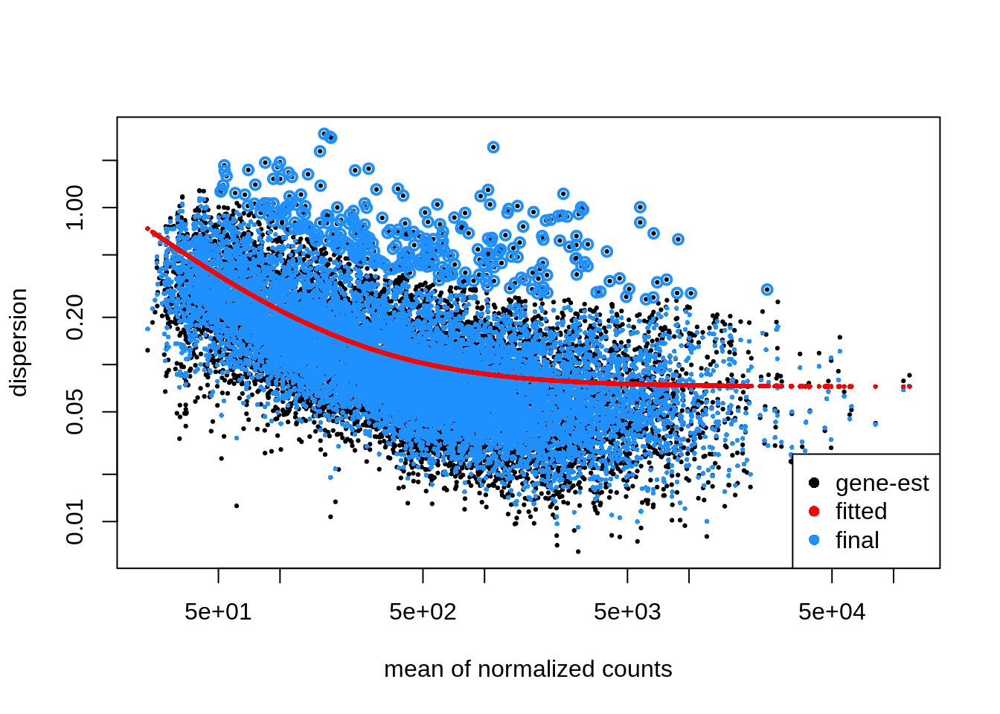
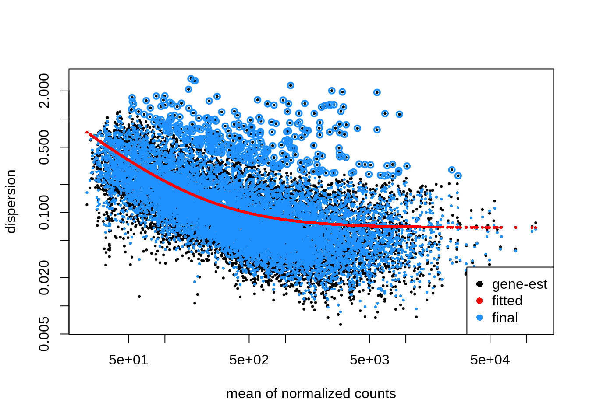
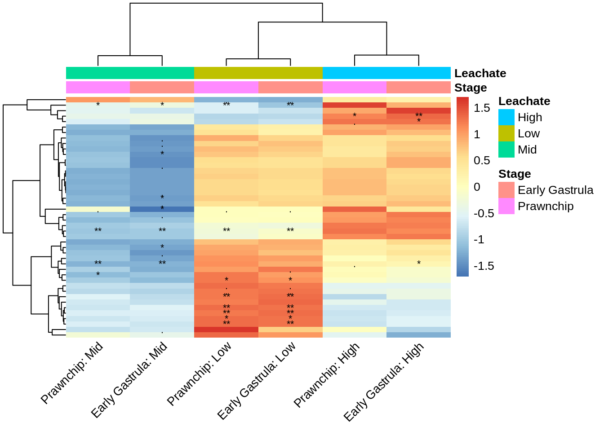

# Load packages
library(DESeq2)
library(viridis)
library(tidyverse)
library(EnhancedVolcano)
library(ashr)
library(flexoki)
library(plotly)
library(cowplot)
library(vsn)
library(pheatmap)Multifactorial Differential Gene Expression
Exploring the interactions between embryonic stage and PVC leachate in Montipora capitata using DESeq2
1 Background
Here we are looking at a multifactorial differential gene expression analysis for Montipora capitata coral embryos at 3 developmental stages (4 hours post fertilization = cleavage , 9 hours post fertilization = prawnchip, and 14 hours post fertilization = early gastrula). Embryos at each stage were exposed to either a control, low, mid, or high concentration of PVC leachate. This work aims to understand sublethal effects of ubiquitous non-point source PVC leachate pollution on coral reefs.
1.1 Inputs
gcm_filtor.csvis the filtered gene count matrix for 61 samples (two outliers removed).metadata_or.csvis the metadata for 61 samples (two outliers removed)
1.2 Outputs
output/06_deg/interactions/int_wald_heatmap.pngvolcano_facet_interaction.png
2 Setup
2.1 Install packages
Copy and run this once in the console
# CRAN packages
install.packages(c(
"tidyverse",
"viridis",
"plotly",
"cowplot",
"pheatmap",
"vsn",
"ashr",
"remotes" # required for GitHub installs
))
# GitHub package
remotes::install_github("mdscheuerell/flexoki")
# Bioconductor
if (!"BiocManager" %in% rownames(installed.packages())) {
install.packages("BiocManager")
}
BiocManager::install(c("DESeq2", "EnhancedVolcano"))2.2 Load packages
2.3 Import filtered gene count matrix
In this count matrix, each row represents a gene, each column a sequenced RNA library, and the values give the estimated counts of fragments that were assigned to the respective gene in each library by HISAT2
check.names = FALSEremoved the ‘X’ from in front of sample id’s in the column headers
gcm_filtor <- read.csv("../../output/05_explore/gcm_filtor.csv", row.names="gene_id", check.names=FALSE)
head(gcm_filtor)| 101112C14 | 101112C4 | 101112C9 | 101112H14 | 101112H4 | 101112H9 | 101112L14 | 101112L4 | 101112L9 | 101112M14 | 101112M4 | 101112M9 | 123C14 | 123C4 | 123C9 | 123H14 | 123H4 | 123H9 | 123L14 | 123L4 | 123L9 | 123M4 | 123M9 | 131415C14 | 131415C4 | 131415C9 | 131415H14 | 131415H4 | 131415H9 | 131415L14 | 131415L9 | 131415M14 | 131415M4 | 131415M9 | 13M14 | 456C4 | 456H4 | 456H9 | 456L14 | 456L4 | 456L9 | 456M14 | 456M4 | 456M9 | 45C14 | 45C9 | 45H14 | 67C9 | 6C14 | 789H14 | 789H4 | 789H9 | 789L14 | 789L4 | 789L9 | 789M14 | 789M4 | 7C14 | 89C14 | 89C9 | 89M9 | |
|---|---|---|---|---|---|---|---|---|---|---|---|---|---|---|---|---|---|---|---|---|---|---|---|---|---|---|---|---|---|---|---|---|---|---|---|---|---|---|---|---|---|---|---|---|---|---|---|---|---|---|---|---|---|---|---|---|---|---|---|---|---|
| Montipora_capitata_HIv3___RNAseq.g4581.t1 | 176 | 458 | 395 | 195 | 144 | 351 | 156 | 187 | 360 | 215 | 199 | 386 | 63 | 714 | 351 | 138 | 384 | 146 | 190 | 271 | 304 | 771 | 154 | 198 | 321 | 371 | 196 | 221 | 410 | 170 | 362 | 291 | 271 | 396 | 71 | 196 | 351 | 236 | 125 | 73 | 274 | 151 | 454 | 250 | 50 | 348 | 411 | 290 | 114 | 150 | 516 | 332 | 168 | 148 | 409 | 150 | 461 | 208 | 235 | 273 | 230 |
| Montipora_capitata_HIv3___RNAseq.g4582.t1 | 1137 | 380 | 934 | 882 | 326 | 1337 | 1101 | 392 | 1195 | 1311 | 431 | 1076 | 643 | 496 | 1064 | 927 | 378 | 864 | 884 | 270 | 838 | 650 | 516 | 1184 | 712 | 1338 | 1314 | 382 | 1117 | 1167 | 1500 | 1376 | 667 | 1383 | 912 | 306 | 458 | 1301 | 1306 | 249 | 1105 | 1270 | 525 | 967 | 420 | 981 | 590 | 973 | 1022 | 862 | 628 | 1338 | 1027 | 445 | 1326 | 959 | 551 | 711 | 1563 | 1349 | 823 |
| Montipora_capitata_HIv3___RNAseq.g4583.t1 | 2043 | 905 | 1848 | 1847 | 945 | 2087 | 1625 | 1039 | 2367 | 1875 | 1176 | 2230 | 1349 | 1591 | 1529 | 1377 | 648 | 1902 | 2007 | 630 | 1572 | 1258 | 892 | 2175 | 1667 | 2190 | 1932 | 716 | 2219 | 1817 | 2102 | 2108 | 1395 | 2314 | 1639 | 651 | 987 | 1882 | 1882 | 1050 | 2506 | 1649 | 940 | 2005 | 703 | 2230 | 1807 | 1995 | 1769 | 1633 | 1128 | 2429 | 1616 | 819 | 2344 | 1757 | 1111 | 1874 | 2623 | 2594 | 1646 |
| Montipora_capitata_HIv3___RNAseq.g4584.t1 | 2641 | 452 | 706 | 1917 | 266 | 625 | 2301 | 367 | 668 | 1963 | 800 | 706 | 2724 | 703 | 648 | 3178 | 497 | 438 | 1867 | 330 | 366 | 677 | 397 | 1556 | 510 | 473 | 2267 | 334 | 326 | 2772 | 534 | 2296 | 404 | 492 | 2194 | 291 | 547 | 488 | 1736 | 169 | 495 | 1698 | 522 | 595 | 1402 | 913 | 1021 | 310 | 1435 | 2783 | 963 | 783 | 2549 | 313 | 686 | 2913 | 906 | 1307 | 2195 | 778 | 624 |
| Montipora_capitata_HIv3___RNAseq.g4585.t1 | 521 | 17 | 161 | 304 | 33 | 243 | 449 | 20 | 190 | 350 | 103 | 198 | 641 | 25 | 146 | 426 | 9 | 208 | 368 | 31 | 87 | 15 | 90 | 310 | 18 | 208 | 453 | 0 | 106 | 434 | 129 | 375 | 48 | 117 | 527 | 29 | 11 | 87 | 384 | 35 | 198 | 257 | 28 | 154 | 289 | 137 | 238 | 167 | 169 | 489 | 21 | 158 | 457 | 34 | 130 | 501 | 30 | 267 | 355 | 271 | 166 |
| Montipora_capitata_HIv3___RNAseq.g4586.t1 | 121 | 33 | 81 | 116 | 17 | 98 | 114 | 45 | 89 | 109 | 18 | 155 | 78 | 51 | 114 | 121 | 21 | 32 | 116 | 8 | 62 | 64 | 40 | 143 | 39 | 154 | 82 | 15 | 65 | 154 | 144 | 156 | 87 | 90 | 92 | 55 | 29 | 117 | 113 | 0 | 77 | 72 | 30 | 65 | 17 | 50 | 13 | 77 | 81 | 75 | 68 | 172 | 83 | 16 | 82 | 93 | 51 | 55 | 98 | 105 | 42 |
- The raw unfiltered, untransformed, count matrix shows counts of whole numbers (integers)
- Each column is a sample
- Each row is a gene
- A sample id describes parental crosses (the first string of numbers), the pollution exposure (C, L, M, H), and the embryonic stage (4, 9, 14)
Note
gcm_filtor is the gene count matrix that has been filtered down to only contain rows where counts are at least 15 in 75% of the samples and 2 outlier samples ( 131415L4 and 789C4 ) that had poor HISAT alignment and did not group in the exploratory PCA are already removed
2.4 Import metadata
metadata_or <- read_csv("../../metadata/metadata_or.csv")
str(metadata_or)spc_tbl_ [61 × 7] (S3: spec_tbl_df/tbl_df/tbl/data.frame)
$ sample_id : chr [1:61] "101112C14" "101112C4" "101112C9" "101112H14" ...
$ parents : num [1:61] 101112 101112 101112 101112 101112 ...
$ group : chr [1:61] "C14" "C4" "C9" "H14" ...
$ hpf : num [1:61] 14 4 9 14 4 9 14 4 9 14 ...
$ stage : chr [1:61] "earlygastrula" "cleavage" "prawnchip" "earlygastrula" ...
$ leachate : chr [1:61] "control" "control" "control" "high" ...
$ leachate_mgL: num [1:61] 0 0 0 1 1 1 0.01 0.01 0.01 0.1 ...
- attr(*, "spec")=
.. cols(
.. sample_id = col_character(),
.. parents = col_double(),
.. group = col_character(),
.. hpf = col_double(),
.. stage = col_character(),
.. leachate = col_character(),
.. leachate_mgL = col_double()
.. )
- attr(*, "problems")=<externalptr> # Reorder factors
metadata_or$stage <- as.factor(metadata_or$stage)
metadata_or$stage <- fct_relevel(metadata_or$stage, "cleavage", "prawnchip", "earlygastrula")
metadata_or$leachate <- as.factor(metadata_or$leachate)
metadata_or$leachate <- fct_relevel(metadata_or$leachate, "control", "low", "mid", "high")
str(metadata_or)spc_tbl_ [61 × 7] (S3: spec_tbl_df/tbl_df/tbl/data.frame)
$ sample_id : chr [1:61] "101112C14" "101112C4" "101112C9" "101112H14" ...
$ parents : num [1:61] 101112 101112 101112 101112 101112 ...
$ group : chr [1:61] "C14" "C4" "C9" "H14" ...
$ hpf : num [1:61] 14 4 9 14 4 9 14 4 9 14 ...
$ stage : Factor w/ 3 levels "cleavage","prawnchip",..: 3 1 2 3 1 2 3 1 2 3 ...
$ leachate : Factor w/ 4 levels "control","low",..: 1 1 1 4 4 4 2 2 2 3 ...
$ leachate_mgL: num [1:61] 0 0 0 1 1 1 0.01 0.01 0.01 0.1 ...
- attr(*, "spec")=
.. cols(
.. sample_id = col_character(),
.. parents = col_double(),
.. group = col_character(),
.. hpf = col_double(),
.. stage = col_character(),
.. leachate = col_character(),
.. leachate_mgL = col_double()
.. )
- attr(*, "problems")=<externalptr>
Note
metadata_filt contains metadata for 61 samples with explanatory variables: - stage is a factor with 3 levels (cleavage, prawnchip, earlygastrula) - hpf is a discrete numerical variable representing the hours post fertilization 4, 9, and 14 (corresponding to stage)
leachateis a factor with 4 levels (control, low, mid, high)leachate_mgLis a continuous numerical variable representing leachate concentrations in mg/L with values 0 , 0.01 , 0.1 , and 1 (corresponding toleachate)
3 LRT
This compares:
Full model: ~ stage + leachate + stage:leachate
Reduced model: ~ stage + leachate
This tells you: Is there any interaction effect between stage and leachate?
But it won’t tell you which interaction is significant, or in which direction — you need Wald contrasts for that.
3.1 Continuous vs categorical
Embryonic stage should be treated as a categorical variable because DESeq2 will estimate expression differences between stages, rather than assuming a linear progression from 4 → 14 hpf. It will fit different intercepts for each stage (i.e., different baseline expression levels). If you encode stage as numeric, the model would assume a linear change in expression per hour of development, which is biologically risky unless you expect linearity (note: we do not).
Whether leachate is treated as a factor or a numeric (continuous) variable radically changes the interpretation of both the main effect and the interaction. If a variable is numeric, DESeq2 treats it as a continuous covariate. This fits a regression slope, estimating the change in gene expression per unit increase in the variable.
Coding leachate as a categorical factor allows each stage to have its own independent leachate effect. ✅ Use this if you expect nonlinear, stage-specific effects of exposure.
dds_cat <- DESeqDataSetFromMatrix(countData = gcm_filtor,
colData = metadata_or,
design = formula( ~ stage + leachate + stage:leachate))Coding leachate_mgL as a continuous numeric tests for a change in expression per unit increase in leachate, and the interaction term tests whether the slope of the dose-response differs depending on stage. ✅ Use this if you expect a linear or dose-dependent trend, and want to ask if the strength or direction of the trend varies by stage.
dds_con <- DESeqDataSetFromMatrix(countData = gcm_filtor,
colData = metadata_or,
design = formula( ~ stage + leachate_mgL + stage:leachate_mgL))3.2 Run DESeq LRT Tests
Does modeling leachate as a factor vs. a continuous dose better explain gene expression changes across stages?
dds_cat <- DESeq(dds_cat, test = "LRT", reduced = ~ stage + leachate)
dds_con <- DESeq(dds_con, test = "LRT", reduced = ~ stage + leachate_mgL)| Model | Full model | Reduced model | LRT tests… |
|---|---|---|---|
dds_cat_LRT |
stage + leachate + stage:leachate |
stage + leachate |
Are there stage-specific effects of leachate (factor)? |
dds_con_LRT |
stage + leachate_mgL + stage:leachate_mgL |
stage + leachate_mgL |
Are there stage-specific trends in dose response? |
3.3 Results
Plot dispersion
plotDispEsts(dds_cat)
plotDispEsts(dds_con)
Note
Categorical model has less dispersion than the continuous model! Pay attention to the scale of the Y axis when comparing them.
View summary
res_cat <- results(dds_cat, alpha = 0.05)
summary(res_cat)
out of 12565 with nonzero total read count
adjusted p-value < 0.05
LFC > 0 (up) : 28, 0.22%
LFC < 0 (down) : 16, 0.13%
outliers [1] : 0, 0%
low counts [2] : 0, 0%
(mean count < 23)
[1] see 'cooksCutoff' argument of ?results
[2] see 'independentFiltering' argument of ?resultsres_con <- results(dds_con, alpha = 0.05)
summary(res_con)
out of 12565 with nonzero total read count
adjusted p-value < 0.05
LFC > 0 (up) : 2, 0.016%
LFC < 0 (down) : 0, 0%
outliers [1] : 1, 0.008%
low counts [2] : 0, 0%
(mean count < 23)
[1] see 'cooksCutoff' argument of ?results
[2] see 'independentFiltering' argument of ?resultssig_cat <- rownames(results(dds_cat, alpha = 0.05)[which(results(dds_cat)$padj < 0.05), ])
sig_con <- rownames(results(dds_con, alpha = 0.05)[which(results(dds_con)$padj < 0.05), ])
length(intersect(sig_cat, sig_con))[1] 2
Note
2 out of 44 genes have a linear relationship (compared to a non-linear one!) as we look at the interactions between leachate and stage. All 44 of these genes respond to leachate differently depending on stage.
44 genes show significant stage-by-leachate interaction when leachate is treated categorically → meaning the response to leachate varies by stage, but not necessarily in a linear/dose-dependent way.
2 genes show significant stage-specific dose-response effects when leachate is treated as continuous → they show a linear or monotonic trend across leachate concentrations that varies by stage.
The 2 overlapping genes are well-modeled by a linear trend in leachate (i.e., a slope, not just group differences). The 42 other genes show non-linear or non-monotonic behavior — meaning their response does not follow a consistent increase/decrease with dose. Instead, they respond differently to each specific leachate level depending on the stage (e.g., they might increase at 0.1 mg/L but decrease at 1 mg/L, or vice versa).
3.4 Save significant genes
sig_genes <- res_cat %>%
as.data.frame() %>%
filter(padj < 0.05) %>%
rownames_to_column(var = "gene_id")
write.csv(sig_genes, "../../output/06_deg/interactions/sig_genes.csv")Of the 44 genes showing significant stage-specific responses to leachate (based on the categorical model), only 2 also show a significant linear dose-response interaction with stage (based on the continuous model). This suggests that while stage modulates leachate response broadly, most genes (42/44) exhibit nonlinear or non-monotonic patterns, rather than a simple linear trend across leachate levels. keep.order = TRUE)
vsd <- assay(vst(dds_cat))
# make long expression dataframe of significant interaction genes
sig_long <- vsd[sig_cat, ] %>%
as.data.frame() %>%
rownames_to_column("gene_id") %>%
pivot_longer(-gene_id, names_to = "sample_id", values_to = "expression")
# add metadata
sig_long <- sig_long %>% left_join(metadata_or, by = "sample_id")
# add padj
sig_long <- sig_long %>% left_join(sig_genes, by = "gene_id")3.4.1 Plot top 3 most significant interaction genes
3.4.2 Loop plots of significant interaction genes
# create output directory
dir.create("../../output/06_deg/interaction/gene_plots", recursive = TRUE, showWarnings = FALSE)
for (gene in unique(sig_long$gene_id)) {
gene_df <- sig_long %>% filter(gene_id == gene)
p <- ggplot(gene_df, aes(x = leachate, y = expression, color = stage, group = stage)) +
geom_point(size = 2, alpha = 0.8) +
geom_smooth(method = "loess", se = FALSE) +
labs(
title = paste("Gene:", gene),
x = "Leachate (mg/L)",
y = "VST expression"
) +
theme_minimal(base_size = 12) +
theme(
legend.position = "right",
plot.title = element_text(hjust = 0.5)
)
# Render as interactive plotly
print(plotly::ggplotly(p))
# Save to PNG
ggsave(
filename = paste0("../../output/06_deg/gene_plots/", gene, ".png"),
plot = p, width = 6, height = 4, dpi = 300
)
}
Note
We have 44 genes with significant interaction effects overall.
Next step: 👉 Use Wald tests to dig into which interactions (e.g., stage × leachate level) are responsible — gene by gene.
4 Wald
Wald tests on interaction terms assess whether the interaction coefficient differs significantly from 0 — i.e., whether the combined effect of that
hpfandleachatelevel deviates from what would be expected by the additive effects alone.
| What You Want to Know | Use | Explanation |
|---|---|---|
| Any interaction overall? | LRT | reduced = ~ stage + leachate |
| Specific interaction term significant? | Wald | results(dds, name = "stageX.leachateY") |
| Total effect of leachate at specific stage vs control | Wald with combined contrast | c("leachateY_vs_control", "stageX.leachateY") |
| Difference in leachate effect between two stages | Wald contrast of interactions | list("stageX.leachateY", "stageZ.leachateY") |
dds <- DESeqDataSetFromMatrix(countData = gcm_filtor,
colData = metadata_or,
design = formula( ~ stage + leachate + stage:leachate))dds_wald <- DESeq(dds, test = "Wald")4.1 Interaction terms
resultsNames(dds_wald) [1] "Intercept" "stage_prawnchip_vs_cleavage"
[3] "stage_earlygastrula_vs_cleavage" "leachate_low_vs_control"
[5] "leachate_mid_vs_control" "leachate_high_vs_control"
[7] "stageprawnchip.leachatelow" "stageearlygastrula.leachatelow"
[9] "stageprawnchip.leachatemid" "stageearlygastrula.leachatemid"
[11] "stageprawnchip.leachatehigh" "stageearlygastrula.leachatehigh"“stageprawnchip.leachatelow”
“stageearlygastrula.leachatelow”
“stageprawnchip.leachatemid”
“stageearlygastrula.leachatemid”
“stageprawnchip.leachatehigh”
“stageearlygastrula.leachatehigh”
Each of the above interaction terms tells us the extra effect of leachate at this stage (vs the additive sum of the stage and leachate effects).
4.1.1 Extract Wald results for all interaction terms
# Get the interaction Wald results
res_high_pc <- results(dds_wald, name = "stageprawnchip.leachatehigh")
res_mid_pc <- results(dds_wald, name = "stageprawnchip.leachatemid")
res_low_pc <- results(dds_wald, name = "stageprawnchip.leachatelow")
res_high_eg <- results(dds_wald, name = "stageearlygastrula.leachatehigh")
res_mid_eg <- results(dds_wald, name = "stageearlygastrula.leachatemid")
res_low_eg <- results(dds_wald, name = "stageearlygastrula.leachatelow")
# Combine into a summary
int_wald_df <- data.frame(
gene_id = rownames(res_high_pc),
prawnchip_high_log2FC = res_high_pc$log2FoldChange,
prawnchip_high_padj = res_high_pc$padj,
prawnchip_mid_log2FC = res_mid_pc$log2FoldChange,
prawnchip_mid_padj = res_mid_pc$padj,
prawnchip_low_log2FC = res_low_pc$log2FoldChange,
prawnchip_low_padj = res_low_pc$padj,
earlygastrula_high_log2FC = res_high_eg$log2FoldChange,
earlygastrula_high_padj = res_high_eg$padj,
earlygastrula_mid_log2FC = res_mid_eg$log2FoldChange,
earlygastrula_mid_padj = res_mid_eg$padj,
earlygastrula_low_log2FC = res_low_eg$log2FoldChange,
earlygastrula_low_padj = res_low_eg$padj
)
# Focus on the 44 genes
int_wald_df_sig <- int_wald_df[int_wald_df$gene_id %in% sig_genes$gene_id, ]library(pheatmap)
# Step 1: Order and extract log2FC values
log2fc_cols <- c(
"prawnchip_low_log2FC", "prawnchip_mid_log2FC", "prawnchip_high_log2FC",
"earlygastrula_low_log2FC", "earlygastrula_mid_log2FC", "earlygastrula_high_log2FC"
)
mat <- as.matrix(int_wald_df_sig[, log2fc_cols])
rownames(mat) <- int_wald_df_sig$gene_id
# Step 2: Rename columns for clarity
colnames(mat) <- c(
"Prawnchip: Low", "Prawnchip: Mid", "Prawnchip: High",
"Early Gastrula: Low", "Early Gastrula: Mid", "Early Gastrula: High"
)
# Step 3: Create annotation for stage/leachate
annotation_col <- data.frame(
Stage = rep(c("Prawnchip", "Early Gastrula"), each = 3),
Leachate = rep(c("Low", "Mid", "High"), times = 2)
)
rownames(annotation_col) <- colnames(mat)
# Step 4: Prepare significance (padj < 0.05) annotation matrix
padj_cols <- c(
"prawnchip_low_padj", "prawnchip_mid_padj", "prawnchip_high_padj",
"earlygastrula_low_padj", "earlygastrula_mid_padj", "earlygastrula_high_padj"
)
padj_mat <- as.matrix(int_wald_df_sig[, padj_cols])
rownames(padj_mat) <- int_wald_df_sig$gene_id
colnames(padj_mat) <- colnames(mat)
# Significance stars with NA handling
sig_labels <- ifelse(is.na(padj_mat), "",
ifelse(padj_mat < 0.01, "**",
ifelse(padj_mat < 0.05, "*",
ifelse(padj_mat < 0.1, ".", ""))))
# Step 5: Save heatmap with significance stars
png("../../output/06_deg/interactions/int_wald_heatmap.png", width = 10, height = 12, units = "in", res = 600)
pheatmap(mat,
cluster_rows = TRUE,
cluster_cols = TRUE,
scale = "row",
show_rownames = FALSE,
annotation_col = annotation_col,
display_numbers = sig_labels,
number_color = "black",
fontsize = 10,
fontsize_number = 8,
angle_col = 45,
border_color = NA)
dev.off()png
3 # Print the heatmap inline
pheatmap(mat,
cluster_rows = TRUE,
cluster_cols = TRUE,
scale = "row",
show_rownames = FALSE,
annotation_col = annotation_col,
display_numbers = sig_labels,
number_color = "black",
fontsize = 10,
fontsize_number = 8,
angle_col = 45,
border_color = NA)
🧬 What does the heatmap show? Each cell in the heatmap shows the scaled log2 fold change for a gene in a specific interaction condition.
✅ Scaling Because you set scale = “row”, each gene’s values are z-scored across the six interaction conditions
Blue = low relative expression change in that condition
Red = high relative expression change in that condition
The actual color scale is relative within each row, not across the whole matrix.
This helps visualize patterns of expression changes across conditions for each gene, regardless of absolute size.
📊 What can you learn from this? Are there groups of genes responding similarly? Row clustering may reveal gene modules with similar interaction response profiles.
Which stage + leachate condition drives the interaction? Column patterns (e.g., lots of red in prawnchip_high_log2FC) suggest strong interaction effects in that condition.
Which genes have the strongest differential interactions? Genes with high contrast (strong red/blue) have more dynamic interaction effects.
🧠 Interpretation Reminder These log2 fold changes are interaction effects — they reflect how gene expression at a specific
stage&leachatelevel deviates from the expected additive effect ofstageandleachatealone.So, a large positive log2FC means:
“At this
stageandleachatelevel, this gene is more highly expressed than we would expect based onstageandleachateeffects individually.”Likewise, a large negative value = stronger-than-expected suppression.
int_wald_df_sig$any_sig <- apply(int_wald_df_sig[, grepl("padj", names(int_wald_df_sig))], 1, function(p) any(p < 0.05, na.rm = TRUE))
head(int_wald_df_sig)| gene_id | prawnchip_high_log2FC | prawnchip_high_padj | prawnchip_mid_log2FC | prawnchip_mid_padj | prawnchip_low_log2FC | prawnchip_low_padj | earlygastrula_high_log2FC | earlygastrula_high_padj | earlygastrula_mid_log2FC | earlygastrula_mid_padj | earlygastrula_low_log2FC | earlygastrula_low_padj | any_sig | |
|---|---|---|---|---|---|---|---|---|---|---|---|---|---|---|
| 107 | Montipora_capitata_HIv3___TS.g26493.t2a | -3.4352875 | 0.9996309 | -7.6702970 | 0.0000065 | -6.2730496 | 0.0030781 | -3.6967269 | 0.8550472 | -7.6017088 | 0.0000065 | -5.9924098 | 0.0041409 | TRUE |
| 283 | Montipora_capitata_HIv3___RNAseq.g5198.t1 | 2.5792480 | 0.7137751 | -0.2798394 | 0.9999932 | 1.9381410 | 0.9527586 | 2.7231003 | 0.3467857 | -0.4911435 | 0.9996588 | 1.7340973 | 0.7366880 | FALSE |
| 637 | Montipora_capitata_HIv3___TS.g28558.t3a | -0.1389199 | 0.9996309 | 0.2108374 | 0.9999932 | -0.9268682 | 0.0839519 | -0.2103804 | 0.9997162 | 0.1068071 | 0.9996588 | -0.9343461 | 0.0585607 | FALSE |
| 708 | Montipora_capitata_HIv3___RNAseq.g6929.t1 | -0.6082592 | 0.9996309 | -0.8161493 | 0.1231430 | -0.1300450 | 0.9997119 | -0.8417494 | 0.1387174 | -0.7883536 | 0.0720004 | -0.4080484 | 0.8050033 | FALSE |
| 743 | Montipora_capitata_HIv3___RNAseq.g7017.t1 | -0.5085329 | 0.9996309 | -3.8941673 | 0.0436130 | 2.6786771 | 0.9997119 | -1.0299392 | 0.9997162 | -3.6122698 | NA | 2.0295263 | 0.8233622 | TRUE |
| 1331 | Montipora_capitata_HIv3___TS.g42133.t1 | 5.2242553 | 0.4164127 | -2.7507733 | 0.9999932 | -0.1094498 | 0.9997119 | 5.5857714 | 0.2085614 | -2.7160060 | 0.8725675 | 0.6458589 | 0.9470597 | FALSE |